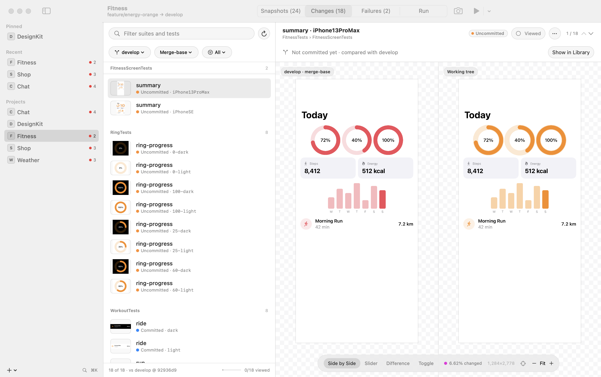
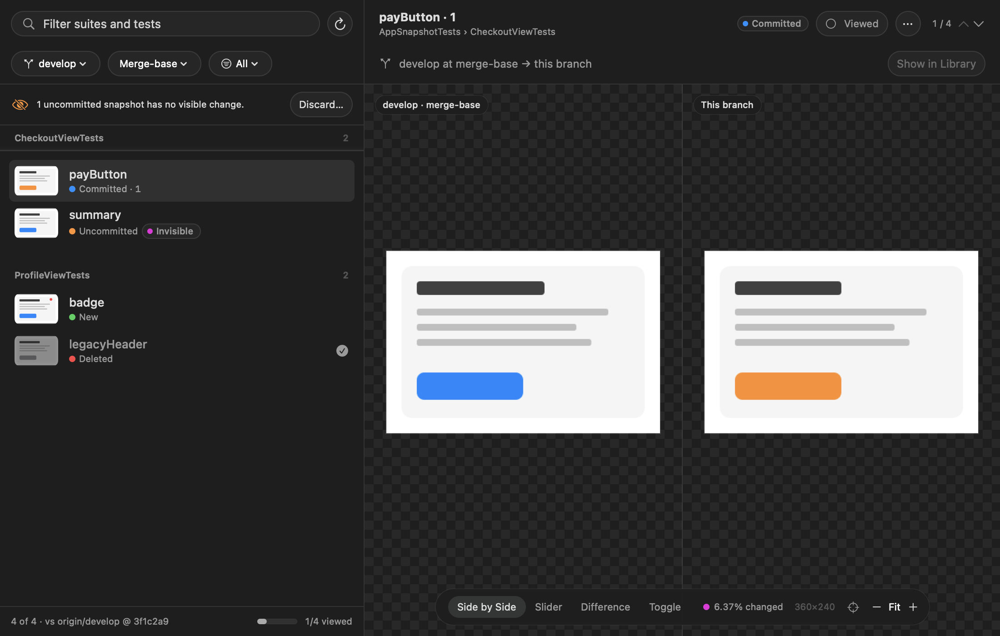
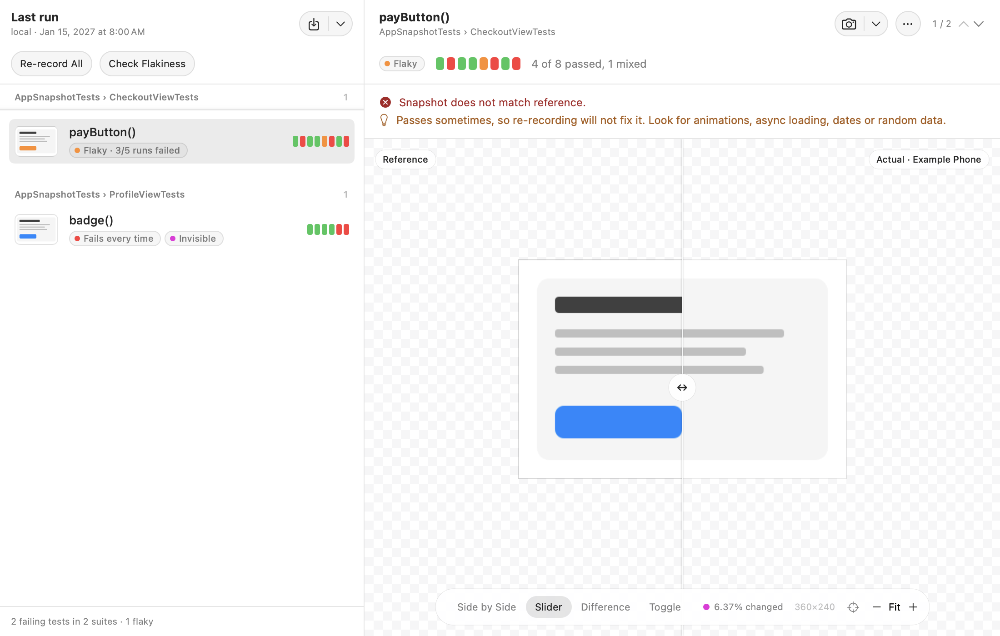
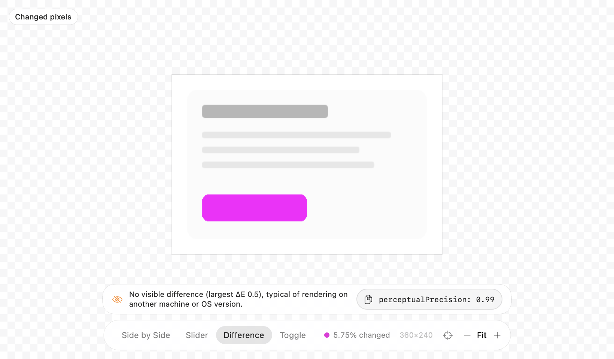
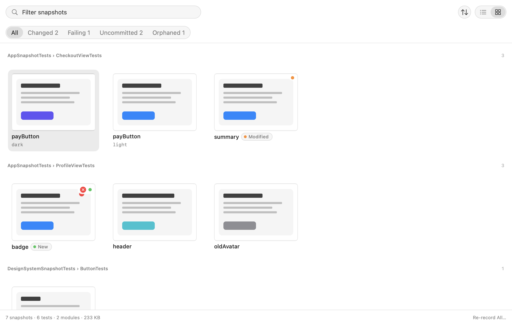

Review snapshots like code.
Every PNG that differs from the base branch, committed or not, against the merge-base or the branch tip. Each change names the commit that last touched it.
Your tests already record reference images with swift-snapshot-testing. SnapshotKit is the Mac app, menu bar item and command-line tool that works with them: browse every image, review what your branch changed, run the tests like CI and re-record what should change. Nothing to add to your project.

Your iOS or macOS project already has snapshot tests, with Swift Testing or XCTest.
@Test func payButton() {
assertSnapshot(of: PayButton(),
as: .image)
}
Each test writes PNGs next to it, in a __Snapshots__ folder in your repository.
CheckoutTests/
__Snapshots__/CheckoutTests/
payButton.light.png
payButton.dark.png
Open the repository. SnapshotKit finds the images, reads how CI runs the tests, and lets you review, run and re-record them.
New to snapshot testing? Start with Point-Free's swift-snapshot-testing, then point SnapshotKit at your project.
Browse every reference image, review what your branch changed side by side or as a difference, see why tests failed, and re-record what should change.
See the appRun progress as a filling pie, the failing count, and your projects one click away, while you keep working in Xcode.
See the menu barsnapkit lists, compares, runs and re-records snapshots the way CI does, for scripts, CI jobs and anyone who lives in a shell.
See the CLIEvery PNG that differs from the base branch, committed or not, against the merge-base or the branch tip. Each change names the commit that last touched it.


Reference, actual and difference for the last run or an .xcresult from CI. Each difference is diagnosed, flaky tests are named, and every test shows its recent runs.
When a test fails on another machine without a visible change, SnapshotKit says so and offers the precision that would pass.


One test, a suite, every dark variant you filtered to, the failing ones or all of them, run the way CI runs them. The record trait is restored even if you quit, and the new references are verified.
The snapkit CLI reads the same projects, runs tests the way CI does and re-records them the same safe way, for scripts, CI jobs and people who live in a shell.
$ snapkit changes --base develop Snapshots changed vs develop (Merge-base 0ad108e8): 22 BubbleTests Uncommitted …/BubbleTests/emoji.dark.png Uncommitted …/BubbleTests/emoji.light.png ComposerTests Committed …/ComposerTests/typing.dark.png ReactionTests New …/ReactionTests/reacted.dark.png …
$ snapkit failures --xcresult ci.xcresult ShopTests/ProductCardTests ✘ trailShoes() (1/1 repetitions failed) reference: …/ProductCardTests/trailShoes.light.png Visible change in a 105×58 area at 847, 136. recent runs: ✔ ✔ ✘ ✘ waterBottle() (1/1 repetitions failed) reference: …/ProductCardTests/waterBottle.dark.png No visible difference (largest ΔE 0.5), typical of rendering on another machine or OS version. Would pass with perceptualPrecision: 0.99. ShopTests/ShopScreenTests ✘ productList() (1/1 repetitions failed) reference: …/ShopScreenTests/productList.iPhoneSE.png The image size changed, so the device, scale or layout differs from the reference.
snapshotsList every snapshot with its state; find orphans; sort by size or recency.changesSnapshots that differ from the base branch, at the merge-base or the tip.recordRe-record the tests of the snapshots whose path contains every word you give.runRun the snapshot tests the way CI does, locally or on a remote Mac.rerecordRe-record the failing suites of the last run, then verify.failuresList failures from the last run or an .xcresult and diagnose each one.flakyRun the failing tests several times and say which are flaky.historyRecent runs and flaky tests, for the project or one test.diffPixel and perceptual difference of two PNGs, with a precision that passes.openThe same, then compare the two in SnapshotKit: your diff tool for failing tests.configThe configuration CI uses, with a check of Xcode and the simulator.restoreUndo a record patch left behind by an interrupted run.projectsScan folders for repositories with snapshot tests, or list them.Name snapkit open as swift-snapshot-testing's diff tool, and every failing test's message ends in a command that opens the reference and the actual image side by side in SnapshotKit, one click from the snapshot in its project.
extension SnapshotTestingConfiguration.DiffTool {
static let snapkit = Self {
"snapkit open \"\($0)\" \"\($1)\""
}
}
// Swift Testing
@Suite(.snapshots(diffTool: .snapkit))
// XCTest
withSnapshotTesting(diffTool: .snapkit) { … }
Output from the sample projects that scripts/make-samples.sh generates, with paths shortened.
Download the app and the CLI from the latest release, for Apple silicon and macOS 14 or later. Unzip and move SnapshotKit.app to Applications.
The app is ad-hoc signed and not notarized. Choose Open Anyway in System Settings › Privacy & Security, or run:
xattr -dr com.apple.quarantine \ /Applications/SnapshotKit.app
With Xcode 26 or later, this builds the app and the CLI into ./dist.
git clone https://github.com/TobiasRe/SnapshotKit cd SnapshotKit scripts/make-app.sh